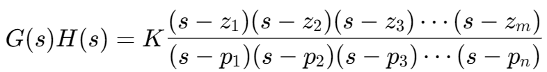
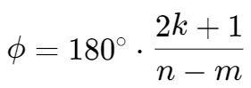
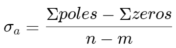
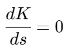

根轨迹,,
对于一个传递函数：

- 设：
- n: the number of poles
- m: the number of zeros
- 在 s-平面上标记所有的开环极点（用“×”表示）和开环零点（用“○”表示）
- 根轨迹的分支数量等于系统的开环极点数量 n
- 渐近线的角度为：, (把 k 看作 0)
- 渐近线与实轴的交点位置：
- 通过 1 + G(s)H(s) = 0，使 K 关于 s 的导数等于 0：
- 将结果中不在根轨迹上的根移除，使用在根轨迹上的根绘制根轨迹。
- 通过构造 Routh 数组来确定根轨迹与虚轴的交点。